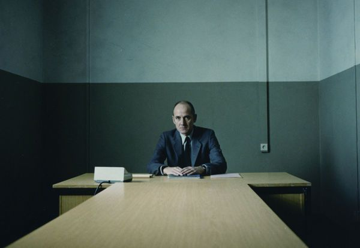
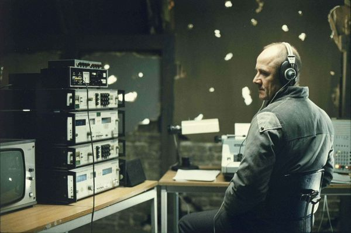
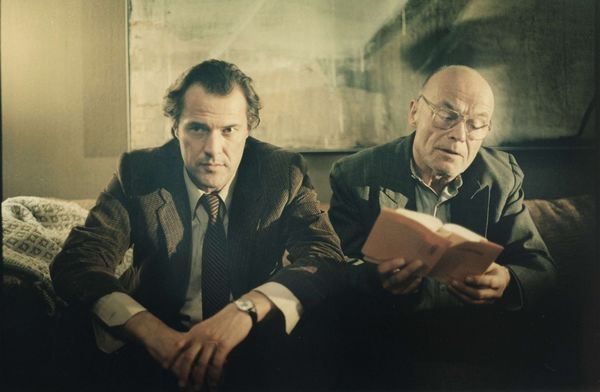
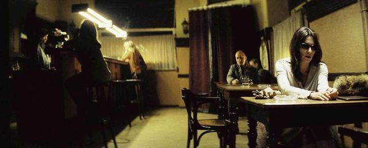
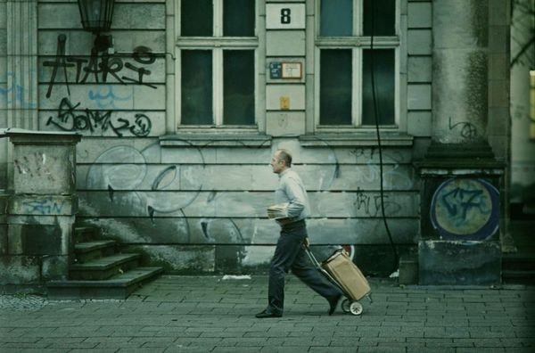

电影从一堂审讯课开始。斯塔西军官威斯勒放着录音带，向学员讲解怎样熬垮一个嫌疑人：不许他睡觉，让他反复讲同一个故事，从措辞的微小出入里找到裂缝。有学生举手，问这样对待人是不是太不人道。威斯勒不动声色地答完，在名册上那个名字旁边画了一个叉。这个开场把人物钉得死死的：他不是虐待狂，他是信徒——相信体制即正义，程序即良心，一个把讯问做成手艺、把手艺做成信仰的人。全片要讲的，就是这样一颗心怎样被融化；而融化它的，不是一场革命，是一副耳机。

一九八四年，东柏林。剧作家德莱曼是官方眼里"最干净的作家"——有才华，又忠诚，两样很少长在同一个人身上。对他的全面监听让威斯勒亲自挂帅，代号 HGW XX/7。但这桩任务的底细见不得光：批下它的文化部长看上了德莱曼的恋人、女演员克丽丝塔。国家安全的神圣话语底下，装的是一个老男人的私欲。这是影片对极权最狠的一刀：它不急着控诉制度的宏大之恶，先掀开盖子让你看清，那台庞大机器的燃料，常常不过是人心里最陈旧的贪与妒。制度作恶需要理由，人心供应理由，从来不缺货。

于是出现了全片的基本构图：楼上与楼下。楼下的公寓里有书架、钢琴、朋友、争吵和爱情；楼上的阁楼里有一个戴耳机的男人、一台打字机和几页冷冰冰的报告。威斯勒自己的住所空得像一间审讯室，电视里放着官方新闻，饭是一个人吃的。他窃听的本是敌情，听到的却是生活——那种他从未被允许、也从未敢想的东西。某一天，他从楼下顺走了一本布莱希特的诗集，坐在自己的沙发上读。一个以偷听为业的人，第一次偷的是光。

真正的决口是一首曲子。德莱曼的挚友、被禁演多年的话剧导演耶尔斯卡，在生日聚会上送了他一份乐谱，《好人奏鸣曲》。不久，这位再也等不到舞台的导演自缢了。噩耗传来，德莱曼坐在钢琴前把那首奏鸣曲弹了一遍。楼上，耳机里，威斯勒听着，眼泪毫无准备地涌出来。弹完，德莱曼对克丽丝塔说了一句近乎自语的话：听过这首曲子的人——我是说真正听过的人——还能是一个坏人吗？他不知道这句话有一个听众，更不知道它落在那个听众心里，像落在干柴上。圣经用另一种语言描述这件事："我也要赐给你们一个新心，将新灵放在你们里面，又从你们的肉体中除掉石心，赐给你们肉心。"（以西结书 36:26）石心不是被论证软化的，是被触摸软化的；恩典常常不走正门，它从艺术的窗户潜入，翻墙进入戒备最森严的心。
转变落到实处，是一连串安静的职务犯罪。德莱曼故意在家里谈论一场假的出逃计划，试探住所是否被窃听——阁楼上的威斯勒听得清清楚楚，报告上却一个字未提。此后他的报告越写越像小说：楼下在密谋文章，他写他们在创作剧本；电梯里一个小男孩抱着球问他，你真是斯塔西吗？他职业性的下一句本该是"告诉我你爸爸的名字"，话到嘴边，改成了问那个球叫什么名字。楼下，德莱曼用编辑部走私进来的微型打字机，写出了那篇关于东德自杀率的匿名文章，在西德《明镜》周刊炸响；楼上，那个本该让他们全军覆没的人，成了他们不知道的同谋。

然后体制照例找到了最软的一环。部长胁迫克丽丝塔的方式，是捏住她的舞台生命；她在酒馆里崩溃的那晚，一个陌生人走过来对她说：我是您的观众——您是伟大的艺术家，您不需要向任何人出卖自己。说话的是威斯勒。这是全片最温柔的一次"身份泄露"：监听者走下阁楼，只为把一个快要碎掉的人扶正一寸。可惜体制的手比他快。克丽丝塔被捕，主审官正是威斯勒——他当着上司的面，用当年课堂上的手艺，从她口中审出了打字机藏在地板下。搜查队冲进公寓，掀开地板：空的。威斯勒抢先一步取走了它。而克丽丝塔不知道。她只知道自己供出了爱人，愧疚烧穿了她，她冲出家门，撞进一辆卡车。体制碾过去的时候，最先碎的总是中间那层最软的人——她不够坏，也不够硬，只够被用完。
威斯勒为那台空地板付了全价。上司没有证据，但心里雪亮，一纸调令把他发配到 M 处——在地下室里用蒸汽拆开别人的信件，一拆就是余生的干活。他一言不发地去了。没有人知道他做过什么：楼下的人不知道自己被保护过，体制只知道他搞砸了任务，历史照常向前，把他遗忘在蒸汽里，直到柏林墙倒下的消息从收音机里传来。登山宝训里有一句应许，好像是为这间地下室写的："你施舍的时候，不要叫左手知道右手所做的……你父在暗中察看，必然报答你。"（马太福音 6:3–4）暗中的善没有观众，这正是它的贵重之处；而福音说，暗处并不空，有一双眼睛在。

报答来得很迟，也很轻。统一之后，德莱曼在档案馆里调出了自己厚厚的监视卷宗，越读越不对：那些报告避重就轻，关键处全是虚构。卷宗末页，一枚红色的指印——取走打字机的人，手上沾着色带的红墨。代号 HGW XX/7。他寻到那个人，远远看见他在街头挨家挨户送信，终究没有上前。两年后，书店橱窗里摆出德莱曼的新小说，《好人奏鸣曲》。威斯勒走进去，翻开扉页，上面印着一行字：献给 HGW XX/7。店员问：要包装成礼物送人吗？他说：不，这是给我的。
这是给我的——全片最后一句台词，也是它埋得最深的一句神学。一个人一生只被真正看见过一次：不是被组织考核，不是被上级评定，是被他暗中保护过的人，在多年后认出来，写在一本书的第一页。这一句认领，抵过了他失去的全部。看电影的人在这里流泪，多半是因为认出了自己心底同一个愿望：所有在暗处做过的、无人鼓掌的、赔上了前途的好，究竟有没有人看见？福音的回答比一本书的题献更远。那位"暗中察看的父"不但看见，而且他自己就做过威斯勒做的事，做得更彻底——楼上始终有一位听者，听的不是我们的把柄，是我们的哀声；他不写报告，他代求。"凡靠着他进到神面前的人，他都能拯救到底，因为他是长远活着，替他们祈求。"（希伯来书 7:25）监听者的档案定人的罪，代求者的钉痕担人的罪。威斯勒从监听者变成守护者，用了一首奏鸣曲；而那位从审判席走到被告席、替被告受了刑的，是为了叫每一个在暗处疲惫行善、无人认领的人，终有一天翻开生命的扉页，读到自己的名字，说出那句台词——不必包装，这是给我的。